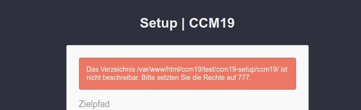
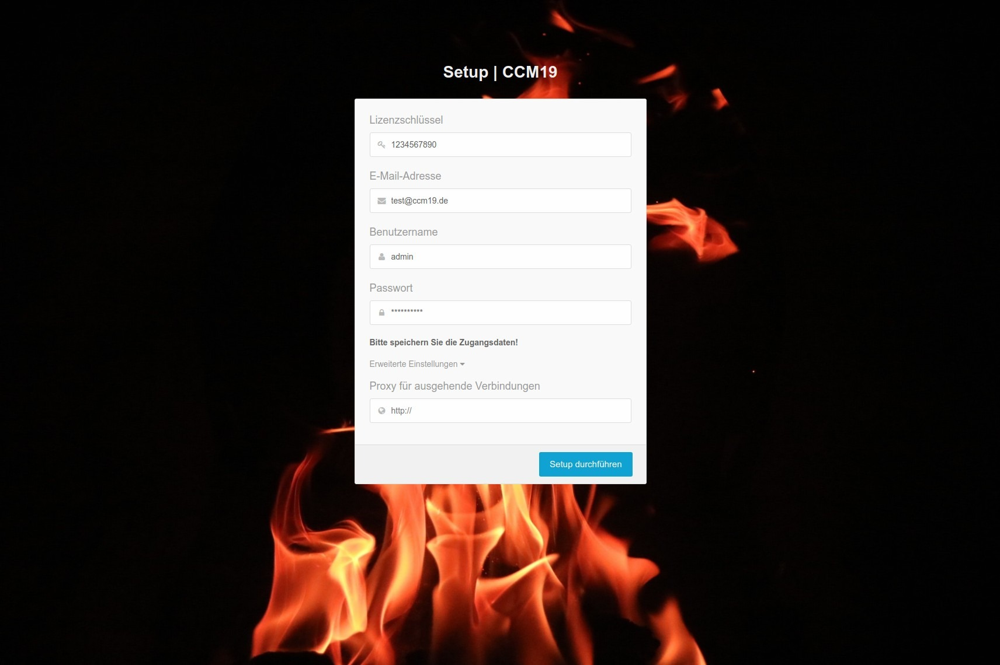
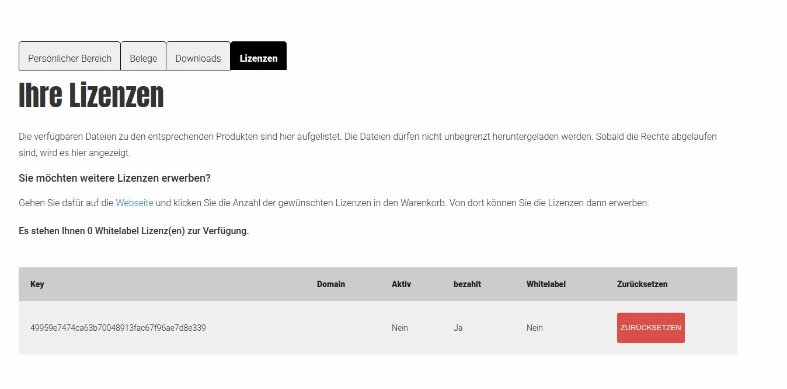

Diesen Teil brauchen Sie nur dann, wenn Sie eine Downloadversion heruntergeladen haben und diese installieren wollen. Die meisten Kunden nutzen unsere Cloudvariante. Für diese ist dieser Teil nicht relevant.
Die Installationsdatei finden Sie im Downloadbereich von CCM19.de - nach dem Kauf der Version bekommen Sie eine E-Mail wo genau steht wo Sie die Dateien finden. Die Maske sieht dabei folgendermaßen aus. Unter dem Reiter Lizenzen finden Sie den Lizenkey den Sie im Schritt 2 der Installation brauchen. Die Keys können auch zurückgesetzt werden.
Nach dem Download der Dateien erhalten Sie eine .zip Datei. Diese Datei müssen Sie auf Ihrem PC entpacken. Auf Ihrem Rechner werden nun zwei neue Datein abgelegt. setup.php und ccm19.zip.
Nach dem Entpacken müssen Sie Ihre Dateien per FTP / SSH oder andere Wege auf Ihren Server spielen. Es empfiehlt sich, den Anweisungen des Hosters zu folgen. Sollte der Hoster keine Informationen zu Ihrem Server hinterlegt haben, fragen Sie diese bitte bei ihm an.
Wir können Ihnen keine Fragen zu Ihrer FTP-Login-Daten beantworten, wir kennen diese NICHT.
Die Dateien setup.php und ccm19.zip laden Sie in das Stamm-Verzeichnis Ihrer Webseite (oder einen beliebig erstellten Ordner).
CCM19 erstellt standardmäßig einen Unterordner /ccm19. Legen Sie also Ihre Datein entsprechend Ihrer Wünsche ab. Wenn Sie CCM19 in das aktuelle Verzeichnis statt einen Unterordner installieren möchten, tragen Sie bitte ./ in die Maske für das Verzeichnis ein.
Die verwendete PHP Version muss mindestens PHP 7.2.x lauten – oder höher (7.3.x, 7.4.x). Falls Sie auf Ihrer Seite die PHP-Version nicht ohne Weiteres updaten können, besteht die Alternative, dass Sie bei Ihrem Provider eine (Sub-)Domain einrichten und dort die PHP Version auf 7.2 oder höher stellen.
Sie können das CCM19 Skript dann auf dieser (Sub-)Domain installieren und von dort aus in Ihre eigentliche Seite einbinden.
Falls auch das nicht funktioniert oder Ihnen der Aufwand zu hoch ist, steht Ihnen die Service Variante unseres Tools zur Verfügung – hier muss nichts installiert werden.
Navigieren Sie auf Ihrer Webseite nun zu dem Ordner, in dem Sie die Dateien abgelegt haben und rufen darin die Datei setup.php auf. In unserem Beispiel wäre dies https://www.MeineDomain.de/setup.php, da wir die Dateien direkt im Stammverzeichnis abgelegt haben.

Optimalerweise ändern Sie den Namen des Verzeichnisses auf irgendetwas unverfängliches. Am besten eine zufällige Kombination aus Buchstaben und Zahlen um die Blocker abzufangen die sonst das Skript blocken könnten.
Sie sollten bei 1&1 oder domainfactory darauf achten, dass Sie nach der Installation die RewriteBase setzen. Hier kurze eine Erklärung, wie das funktioniert:
Wir gehen im folgenden davon aus dass Sie die CCM19 Installation in das Verzeichnis "cookies" gelegt haben. Falls Sie CCM19 in ein anderes Verzeichnis kaden müssten Sie das natürlich passend anpassen. Prinzipiell müssten 2 .htaccess Dateien geändert werden.
RewriteBase /cookies/ccm19/meinedomain.de/cookies/ccm19/public/.htaccess bearbeiten – auch hier unter "RewriteEngine On" ergänzen:
RewriteBase /cookies/ccm19/public/
Versuchen Sie jetzt meinedomain.de/cookies/ccm19/public/setup aufzurufen.
Sollte der 500er Fehler weiter bestehen, handelt es sich evtl. um ein anderes Problem. Gerne würden wir das Problem dann für Sie kostenfrei untersuchen; dazu reicht ein temporärer FTP-Zugang, den Sie nach abgeschlossenen Arbeiten wieder schließen können. Schreiben Sie uns einfach über unser Supportformular.
Das CCM19-Tool wird in diesem Beispiel später über https://www.MeineDomain.de/ccm19/ erreichbar sein.
In diesem Screen können Sie das Installationsverzeichnis ändern. Hier können Sie auch Ordner wie /cookies/, /kekse/ oder ähnliches, aber auch ./ für das aktuelle Verzeichnis angeben. Für unser Beispiel belassen wir es bei /ccm19/.
Bitte achten Sie darauf dass Sie die Schreibrechte für das Verzeichnis korrekt setzen damit das Setup Skript die Dateien dort hineinschreiben kann, ansonsten kommt es zu der folgenden Fehlermeldung.

Sofern Sie nginx als Webserver verwenden, sind üblicherweise Anpassungen an der Serverkonfiguration nötig. Falls Sie nginx verwenden - ist eine Anpassung der Serverkonfiguration notwendig. Mehr Informationen dazu finden Sie im Technikbereich: Technik

Nach der kurzen Installation werden Sie auf die Registrierungsmaske weitergeleitet. Hier müssen Sie Ihren gekauften Lizenzschlüssel eingeben, den Sie hier einsehen können.

Oder Sie navigieren auf der ccm19.de Seite im Top-Menu unter Login > Download Version Login und danach im Sub-Menu zum Punkt Lizenzen. Dort kopieren Sie Ihren Lizenzschlüssel und fügen ihn in die entsprechende Spalte ein.
Danach tragen Sie noch eine gültige E-Mail Adresse ein (ohne gültige E-Mail Adresse können Sie später Ihr Passwort nicht zurücksetzen!). Danach können Sie noch einen Usernamen und ein Passwort wählen. Der Benutzername kann später NICHT mehr geändert werden! Klicken Sie danach auf "Setup durchführen" und das System wird installiert.
Weiterhin können Sie unter "Erweiterte Einstellungen" einen Proxy Server angeben falls in Ihrem Unternehmen einer benutzt wird für die Ausgabe der Webseite - dies ist aber ein sehr seltener Zustand. In der Regel wird dies nicht gemacht.
Sobald das Installationskript fertig ist, werden Sie zur Loginmaske weitergeleitet oder direkt eingeloggt und Sie landen im Dashboard.
Im Anschluß an die Installation sollten Sie noch die Setup Dateien löschen damit das Setup nicht erneut durchgeführt werden kann - Sie bekommen dazu auch einen entsprechenden Hinweis in der Administration.
Mit dem Button zurücksetzen können Sie der Installation jederzeit den Key entziehen und neu setzen. Das macht z.B. Sinn wenn Sie die Installation erst auf einer Subdomain testen und dann später im Livesystem erneut installieren.